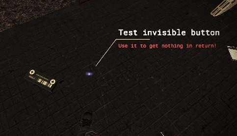

Module: usable_showup
Documentation last edited: October 23, 2025 at 14:33 UTC
Description

Видишь тот текст там? Тот, который мог бы легко оскорбить добрую часть населения США, понимаешь? Так вот, это то, что я называю "Usable Showup" (Подсказка взаимодействия). Это помогает игроку определить - что делает этот используемый объект. Это было сделано потому что:
А: Люди путались в некоторых панелях управления, которые я всё равно люблю использовать...
Б: Я самый ленивый уёбок на свете, конечно, я буду злоупотреблять такой хренью вместо того, чтобы правильно это level design'ить.
Один модуль решает огромную проблему существования. Это потрясающе. Облегчает жизнь. Как глоток свежего воздуха. Глоток воздуха, полного текста, но всё же.
Пример использования
# Наш прославленный родительская нода
var parent
# Устанавливает основной текст подсказки (линия 0)
func set_text0_text(text: String):
if not is_instance_valid(usable_showup):
return
usable_showup.set_text0_text(text)
# Получает основной текст подсказки (линия 0)
func get_text0_text() ->
String:
if not is_instance_valid(usable_showup):
return ""
return usable_showup.get_text0_text()
# Устанавливает цвет для основного текста подсказки
func set_text0_color(color: Color):
if not is_instance_valid(usable_showup):
return Color.black
usable_showup.set_text0_color(color)
# Получает цвет основного текста подсказки
func get_text0_color() ->
Color:
if not is_instance_valid(usable_showup):
return Color.black
return usable_showup.get_text0_color()
# Устанавливает вторичный текст подсказки (линия 1)
func set_text1_text(text: String):
if not is_instance_valid(usable_showup):
return
usable_showup.set_text1_text(text)
# Получает вторичный текст подсказки (линия 1)
func get_text1_text() ->
String:
if not is_instance_valid(usable_showup):
return ""
return usable_showup.get_text1_text()
# Устанавливает цвет для вторичного текста подсказки
func set_text1_color(color: Color):
if not is_instance_valid(usable_showup):
return
usable_showup.set_text1_color(color)
# Получает цвет вторичного текста подсказки
func get_text1_color() ->
Color:
if not is_instance_valid(usable_showup):
return Color.black
return usable_showup.get_text1_color()
# Показывает или скрывает UI подсказки взаимодействия
func set_showup_visible(value: bool):
if not is_instance_valid(usable_showup):
return
usable_showup.set_showup_visible(value)
# Проверяет, видна ли в данный момент подсказка взаимодействия
func get_showup_visible() ->
bool:
if not is_instance_valid(usable_showup):
return false
return usable_showup.get_showup_visible()
# Создаёт и прикрепляет UI подсказки взаимодействия
# showup_scale: Коэффициент масштабирования для UI подсказки (по умолчанию 1.0)
func create_showup(showup_scale: = 1.0):
# Если подсказка уже существует, просто обновляем её масштаб и видимость
if usable_showup:
usable_showup.scale = Vector3.ONE * showup_scale
set_showup_visible(true)
return
# Создаём новый экземпляр подсказки и настраиваем его
usable_showup = UsableShowup.create_showup()
usable_showup.scale = Vector3.ONE * showup_scale
parent.add_child(usable_showup)
И вся эта функциональность является частью класса
Usable
, который уже используется всеми кнопками любого рода, настоятельно рекомендуется просто использовать
Usable
. В смысле, чувак. Я уже это написал. Тебе не нужно копипастить то дерьмо, что я уже написал. Это потрясающе - эксплуатировать мой труд. Так? Просто сделай это. Это забавно. Не занимает много времени. И...
Удачи.
General Information
Root directories list
assets, docs, src
Nodes
Classes
None
Resources
None
Other Scripts
None